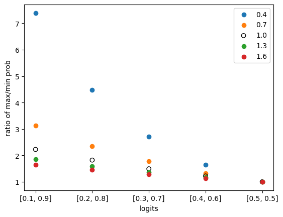

TL:DR OpenAI 的 ChatGPT 在其官方文档（https://platform.openai.com/docs/api-reference/chat/create）中给出了各种参数的范围和含义。我们将讨论 ChatGPT 的生成过程和这些参数是如何实现其生成的效果的。
ChatGPT 的解码过程
我们假设 minGPT （等同于 GPT-2） 和 ChatGPT 拥有一样的解码过程：https://github.com/karpathy/minGPT/blob/master/mingpt/model.py#LL283C12-L283C12 。
总体过程可以概括为以下几个步骤：
- 将用户的请求，从 1 个扩充成 num_samples 大小的 batch
- 进行模型推理，得到 logits
- 进行 temperature 映射：logits = logits / temperature
- [可选] 进行 topk 处理：logits = topk_func(logits, top_k)
- logits 到 概率的转换：probs = softmax(logits)
- 是否 sample：
- 进行 sample：idx_next = multinomial_sample(probs, num_samples=1)
- 不进行 sample：idx_next = topk_func(probs, k=1)
- 重复上述过程 max_new_tokens 次
ChatGPT 的解码参数
temperature
temperature 参数的官方定义如下：
temperature number Optional Defaults to 1
What sampling temperature to use, between 0 and 2. Higher values like 0.8 will make the output more random, while lower values like 0.2 will make it more focused and deterministic.
We generally recommend altering this or
top_pbut not both.
这一部分对应着解码过程的步骤 3.
下面我们将结合模型解码过程，使用数据示例来演示其效果（为了简化逻辑过程，我们不进行 topk 处理）：
- 假设某个模型的 vocabulary 的大小为 2，在某个时刻，模型的输出为 logits = [0.8, 0.2]。
- 如果不进行 temperature 映射（等价于将 temperature 设置为 1， 也就是默认值）： 概率转换：probs = softmax(logits) = [0.65, 0.35]
- 如果 temperature 设置为 1.8，那么 logits = logits / temperature = [0.44, 0.11], 下一步进行概率转换：probs = softmax(logits) = [0.58, 0.42]
- 如果 temperature 设置为 0.2，那么 logits = logits / temperature = [4, 1], 下一步进行概率转换：probs = softmax(logits) = [0.95, 0.05]
总结：从上面的数据可以看出，temperature 越大，logits 数值不同的 token 经过映射后其概率差异越小，从而越有可能会被后续的 sample 部分
值得注意的是，GPT模型的 temperature 取值范围是 0（包含） 到 2（包含）。但是 temperature=0，这个在数值上是无法作为被除数的，ChatGPT 必然采用了某种 trick 或者变换以解决这个问题。
我们画一张图用来演示，不同 temperature 在不同 logits 上的表现：
# importing package
import matplotlib.pyplot as plt
import numpy as np
import math
# x axis index and values
data = list(enumerate(zip(np.arange(0.1, 0.6, 0.1), np.arange(0.9, 0.4, -0.1))))
# colors for each temperature, from low to high temperature, from yellow to dark red
# reference: https://colorbrewer2.org/#type=sequential&scheme=YlOrRd&n=5
colors = ["#ffffb2", "#fecc5c", "#fd8d3c", "#f03b20", "#bd0026"]
for t_idx, temperature in enumerate(np.arange(0.4, 1.6 + 0.0001, 0.3)):
# each line for each temperature
# get x and y values
x = []
y = []
for x_idx, (a, b) in data:
logits = np.array([a, b])
probs = softmax(logits / temperature)
x.append(x_idx)
y.append(probs[1] / probs[0]) # max prob / min prob
# plot
circle_color = colors[t_idx]
if math.isclose(temperature, 1.0):
# plot the line for temperature 1.0 with black circles
plt.scatter(x, y, label=f"{temperature:.1f}", facecolors="black", edgecolors="black")
else:
# other lines with colorful lines
plt.scatter(x, y, label=f"{temperature:.1f}", facecolors=circle_color, edgecolors="gray")
plt.legend()
# set x and y axis
plt.xlabel('logits')
plt.xticks([x for x, _ in data],
[f"[{a:.1f}, {b:.1f}]" for _, (a, b) in data])
plt.ylabel('ratio of max/min prob')
plt.show()
将会输出如下的图：

在上图中，横坐标为 logits（由两个类别构成），纵坐标为 max prob / min prob，也就是概率最大的 token 的概率与概率最小的 token 的概率的比值，这个比值可以用于衡量差异的大小。
在没有引入 temperature 时，概率的比值和 logits 存在严格相关的，logits 的值通过 Logistic 函数可以映射得到概率值。在上图中，temperature = 0 的情况，等价于没有引入 temperature 的情况，在图中使用空心圆圈 ◯ 表示。。
通过观察，可知无论我们选择哪一个 logits，我们都可以看到：temperature 越大，概率之间的差异（也就是 max prob / min prob 比值）越小，也就是概率差异越小。反之亦然。因此，可以得出结论：temperature 越大，模型生成的结果越随机，temperature 越小，模型生成的结果越确定。
top_p
top_p 参数的官方定义如下：
top_p number Optional Defaults to 1
An alternative to sampling with temperature, called nucleus sampling, where the model considers the results of the tokens with top_p probability mass. So 0.1 means only the tokens comprising the top 10% probability mass are considered.
We generally recommend altering this or
temperaturebut not both.
这一部分对应着解码过程的步骤 4.
与 minGPT 不同的是，minGPT 使用绝对值（top_n）来进行选择，而 OpenAI GPT 使用百分比（top_p）。
这一部分会将不合格（比在 top_n 以内的，或者 top_p 比例以外的）的 token 清理掉，通过将其 logits 值设置为 float(‘Inf’) 来实现。
stop
stop 参数的官方定义如下：
stop string or array Optional Defaults to null
Up to 4 sequences where the API will stop generating further tokens.
这一部分在 MinGPT 中没有对应的步骤。
这一部分所要表达的含义也是清晰明了，在监测到输出中存在某些定义的字符串后，将会停止生成。这一特性可能在有些软件中得到了应用。比如 https://github.com/microsoft/guidance 中的 {{gen 'rewrite' stop="\\n-"}}
n
n 参数的官方定义如下：
n integer Optional Defaults to 1
How many chat completion choices to generate for each input message.
这一部分对应着解码过程的步骤1。
由于大小为 n 的 batch 中每一个文本都是独立采样的，因此在同一位置可能会选择不同的 token，这些文本上的变异随着位置的不断延伸而进一步扩大，最终生成了不同的文本。当然了，也有一定概率生成完全一样的文本。
max_tokens
max_tokens 参数的官方定义如下：
max_tokens integer Optional Defaults to inf
The maximum number of tokens to generate in the chat completion.
The total length of input tokens and generated tokens is limited by the model’s context length.
这一部分对应着解码过程中的步骤7.
这一部分决定了解码的最高运行次数。在 minGPT 中，这一解码次数是确定的，模型一定会生成 max_tokens 个 token。而在 OpenAI GPT 中则不一定了，有几个因素：
- stop 参数的设置，详情请见上文。
- 可能的特殊的休止符 token。通过实际使用 ChatGPT，可以发现 ChatGPT 并不会机械的输出指定的文本长度，在充分回答问题后，就会自行停止。
- 实验代码如下：
import openai
openai.api_key = "sk-xxx"
completion = openai.ChatCompletion.create(
model="gpt-4",
messages=[{"role": "user", "content": "你帮我输出1到10之间的偶数，输出时，每个数字之间用一个空格隔开。除了数字，其他的都不要输出。"}],
temperature=0,
max_tokens=100,
)
response = completion.choices[0].message["content"]
print("length: ", len(response)) # 将会输出：length: 10
print(response) # 将会输出：2 4 6 8 10
presence_penalty
presence_penalty 参数的官方定义如下：
frequency_penalty number Optional Defaults to 0
Number between -2.0 and 2.0. Positive values penalize new tokens based on their existing frequency in the text so far, decreasing the model’s likelihood to repeat the same line verbatim.
这一部分在 MinGPT 中没有对应的步骤。
这一部分的详尽解释在 https://platform.openai.com/docs/api-reference/parameter-details 中有提及。
具体来说，就是在解码的某个时刻，token j 的 logit 值为 mu[j] ，c[j] 表示在当前已经生成的文本中，出现过多少个 j 这个 token。c[j] > 0 这个表达式的值只能为1（之前 j 出现过至少一次）或者0（没有出现过）。在 OpenAI 的解释中，它使用了 alpha_presence 来指代 presence_penalty，两者完全是同一事物的不同符号而已。为了保持和文档一致，这里都使用文档中的符号。在加入 presence_penalty 机制后，其值修订为 mu[j] - float(c[j] > 0) * alpha_presence 。这就意味着在 alpha_presence 为正的情况下，j 这个 token 的 logit 会因为之前文本中生成过 j 而有所降低。logit 的降低也意味着被 sample 的概率降低。因此通过提供正值 presence_penalty，就会使模型生成重复 token 的概率降低，换言之，进行了惩罚。如果 alpha_presence 为负值，那么同理可得，会对模型生成重复 token 的行为进行奖励。
presence_penalty 名字中虽然带着 penalty，但由于其取值范围可能是正数也可能是负数，因此并不一定是惩罚 token 的反复出现，也有可能是鼓励反复出现。
frequency_penalty
frequency_penalty 参数的官方定义如下：
frequency_penalty number Optional Defaults to 0
Number between -2.0 and 2.0. Positive values penalize new tokens based on their existing frequency in the text so far, decreasing the model’s likelihood to repeat the same line verbatim.
这一部分在 MinGPT 中没有对应的步骤。
这个参数和 presence_penalty 高度相似。同样在 https://platform.openai.com/docs/api-reference/parameter-details 中有详细的解释。
具体来说，token j 的 logit 值为 mu[j] ，在加入 frequency_penalty 会修订成 mu[j] -> mu[j] - c[j] * alpha_frequency 。其中 c[j] 是当前已经生成的文本中，出现过多少个 j 这个 token。而 alpha_frequency 就是 frequency_penalty 。这就意味着在 frequency_penalty 为正的情况下，j 这个 token 的 logit 会因为之前文本中生成过 j 而有所降低，而且之前生成过的 j 越多（也就是c[j] 数值越大），惩罚越严重。这里可以看出 frequency_penalty 和 presence_penalty 的不同点在于 frequency_penalty 的惩罚会随着 token 出现的次数增加而不断加强，而 presence_penalty 则只会区分是否出现，这样的区别充分体现在了其名字差异上：frequency 和 presence。
和 presence 类似，frequency_penalty 的取值可正可负，从而实现惩罚或者奖励反复出现的 token。
logit_bias
logit_bias 参数的官方定义如下：
logit_bias map Optional Defaults to null
Modify the likelihood of specified tokens appearing in the completion.
Accepts a json object that maps tokens (specified by their token ID in the tokenizer) to an associated bias value from -100 to 100. Mathematically, the bias is added to the logits generated by the model prior to sampling. The exact effect will vary per model, but values between -1 and 1 should decrease or increase likelihood of selection; values like -100 or 100 should result in a ban or exclusive selection of the relevant token.
这一部分在 MinGPT 中没有对应的步骤。
这一参数用于无条件的修改某个或者多个 token 的 logit，从而增加或者减少其出现的可能性。具体来说，对于变量 token j ，其 logit 值为 mu[j] ，那么在使用 logit_bias 后，其值将会被修改成：mu[j] -> mu[j] + logit_bias[j] .